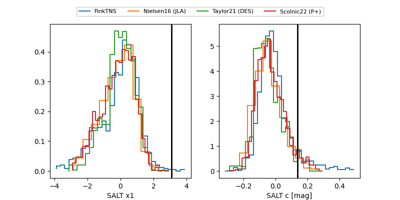

FINK: ZTF25abnrdyb
Lasair: ZTF25abnrdyb
ALeRCE: ZTF25abnrdyb
TNS: 2025xal
YSE: 2025xal
ZTF25abnrdyb (ztf,fink)
2025xal (tns,yse)
equatorial (ra, dec) = (42.9844,+37.14470)
galactic (l, b) = (148.0903,-19.77121)

last atlasc=19.03, atlaso=18.90, ztfg=19.14, ztfr=19.01
4 atlasc, 5 atlaso, 4 ztfg, 3 ztfr detections